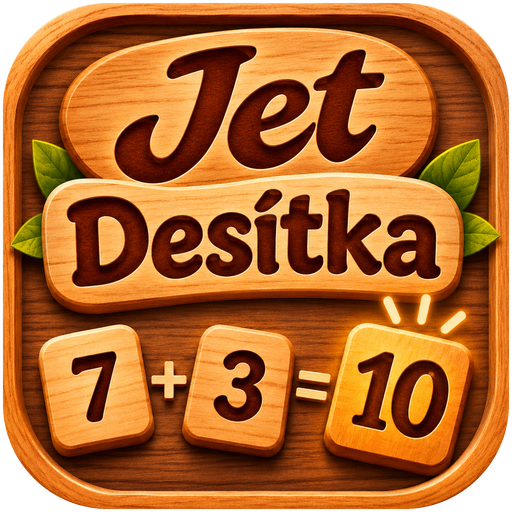
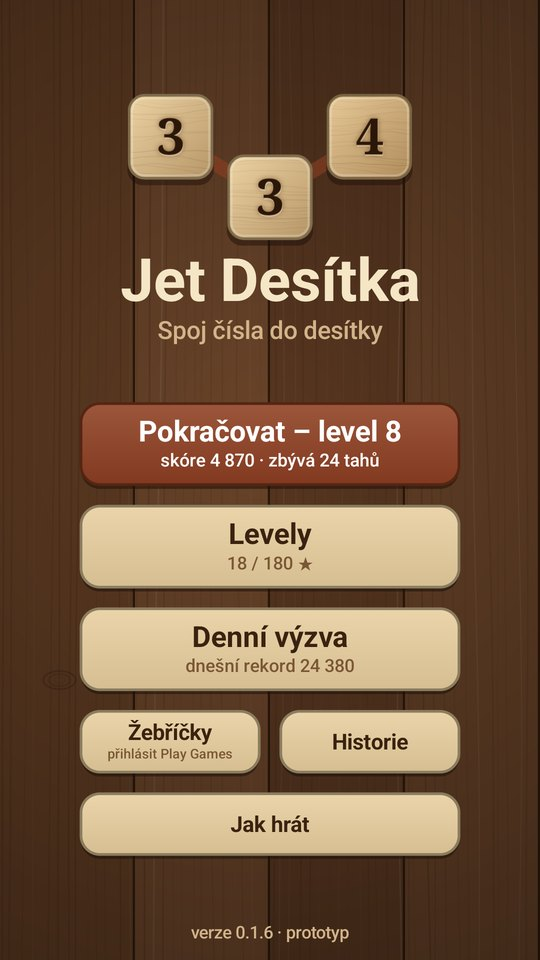
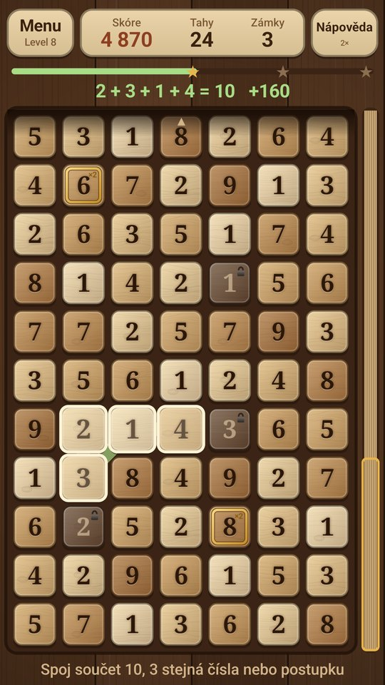
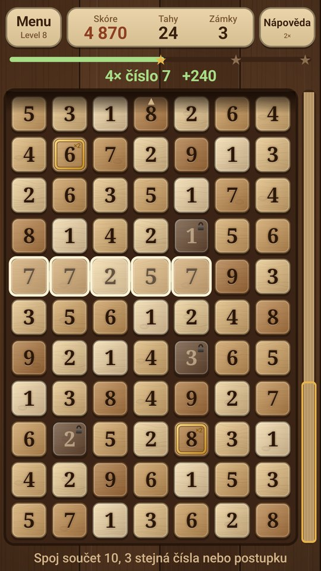
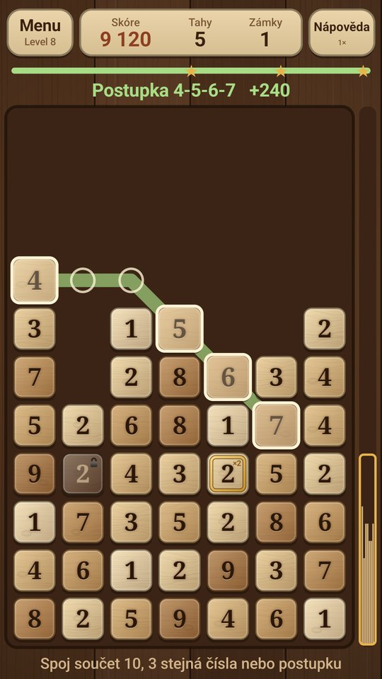
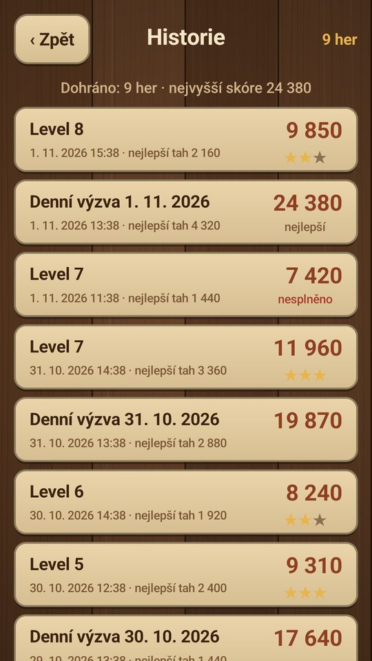
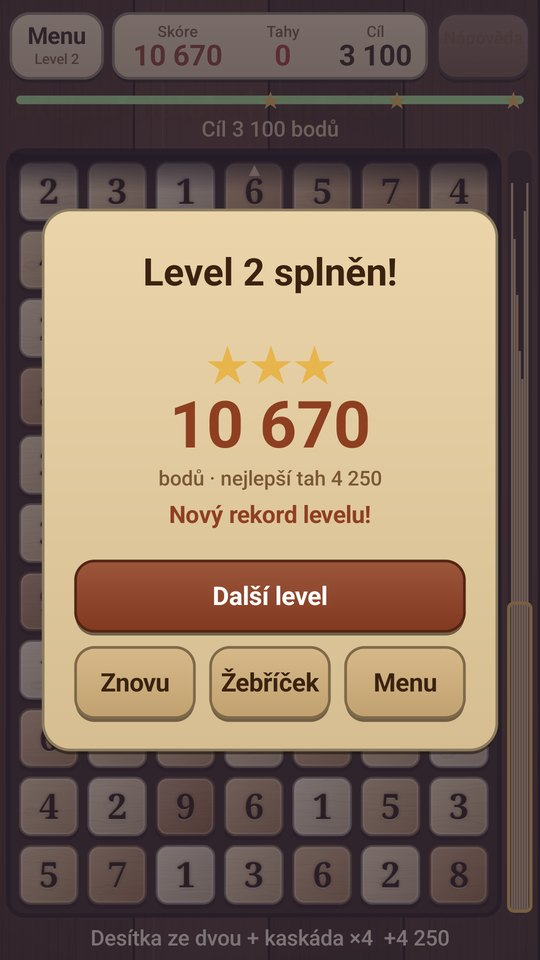

Rdanhel Dev
Rdanhel Dev
ProjektJet Desítka
Klidná číselná hra s dřevěnými kostkami a vypálenými čísly. Prstem spojuješ sousední čísla jako v osmisměrce: do součtu 10, tři a víc stejných, nebo postupku 1-2-3. Všechna čísla čekají předem ve věži, takže si můžeš dopředu naplánovat, co spadne. Žádný časovač ani spěch, jen přemýšlení.
Hra v kostce
Jednoduchá pravidla, ale každý tah stojí za rozmyšlení.
Desítka
Táhni prstem přes sousední čísla do všech osmi směrů, i šikmo. Když dají dohromady přesně 10, zmizí. Za dvojici je 20 bodů, za čtyři čísla 160 a za šest čísel 960. Delší cesta se vyplatí.
Stejná čísla a dvojice
Tři a víc stejných čísel smíš spojit bez ohledu na součet. Kterékoli z nich můžeš nahradit dvěma čísly za sebou se stejným součtem: 7, 7, 2+5, 7 jsou čtyři sedmičky. 3 kusy dají 90 bodů, 4 kusy 240, 5 kusů 600, 6 kusů 1 440.
Postupka
Aspoň tři čísla za sebou, každé o jedna vyšší nebo nižší: 1-2-3-4 nebo 6-5-4. Boduje se stejně jako stejná čísla, celá řada 1 až 9 dá přes 17 000 bodů.
Věž čísel
Všechna čísla hry jsou připravená předem ve věži a nová nepřibývají. Lištou vpravo se posuneš nahoru, uvidíš, co tě čeká, a hrát můžeš kdekoliv, třeba si nahoře připravit kombinaci, která pak spadne dolů.
Mezera jako žolík
Jak věž ubývá, nahoře vznikají prázdná místa. Cesta přes ně může projít, klidně přes celé prázdné sloupce: 2 úplně vlevo a 8 úplně vpravo je pořád desítka. Mezera sama nic nepřičítá.
Kaskády
Zbylá čísla spadnou dolů. Když se pádem sejdou aspoň tři stejná vedle sebe, zmizí sama s násobitelem ×2, ×3, ×4… Jeden dobrý tah tak může přinést tisíce bodů.
Zámky a ×2
Tmavá kostka se železným zámkem nejde vybrat. Odemkne se, když vedle ní zmizí jiné číslo. Kostka s mosaznou intarzií zdvojnásobí body celé cesty.
Bez spěchu
Nehraje se na čas, ale na tahy. Hra se uloží po každém tahu, takže ji můžeš kdykoli zavřít a příště pokračovat. V historii najdeš všechny dohrané hry a jejich skóre.
Dřevěný vzhled
Kostky z masivu s letokruhy a vypálenými čísly na tmavém prkenném stole. Každé číslo má jiný odstín dřeva, od světlého javoru u jedničky po tmavý ořech u devítky, takže čísla poznáš i koutkem oka.
Levely a denní výzva
Postupně těžší levely pro sebe a jedna společná věž denně pro porovnání s ostatními.
- 60 levelů: omezený počet tahů, cílové skóre a od čtvrtého levelu zámky. Za vyšší skóre jsou až tři hvězdy a splněný level odemkne další.
- Denní výzva: každý den nová věž, pro všechny hráče stejná, 60 tahů. Počítá se jen skóre a všichni mají stejná čísla, takže porovnání je férové.
- Historie: přehled dohraných her s datem, skóre a hvězdami.
- Nápověda: třikrát za hru ukáže jednu dobrou cestu.
Hra v číslech
- Věž 7 sloupců, 27–34 řad
- Levely 60, až 3 hvězdy
- Tahů v levelu 30–40
- Denní výzva 60 tahů, věž 48 řad
- Kaskády ×2, ×3, ×4…
- Reklamy a nákupy žádné
Google Play Games
Aby bylo s kým se porovnávat, je hra napojená na herní služby Googlu. Přihlásíš se svým profilem Play Games, žádný další účet ani registrace nejsou potřeba.
Čtyři žebříčky
Denní výzva, hvězdy celkem, nejlepší tah a součet skóre levelů. Uvidíš, jak si vedeš proti přátelům i ostatním hráčům.
Úspěchy a uložení v cloudu
Odměny za velké kaskády nebo dlouhé postupky a pokračování v rozehrané hře na jiném telefonu. Zatím se postup ukládá jen v telefonu.
Screenshoty






Ke stažení
Jet Desítka bude zdarma, bez reklam a bez nákupů v aplikaci. Hra se právě testuje a připravuje k vydání na Google Play.
Android – Google Play
Odkaz na Google Play přibude po vydání aplikace. Zásady ochrany osobních údajů jsou k dispozici už teď.